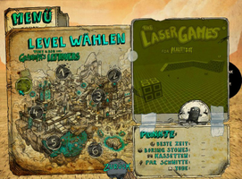

Tiny and Big
Dieser Artikel wurde für die folgenden Ubuntu-Versionen getestet:
Ubuntu 14.04 Trusty Tahr
Zum Verständnis dieses Artikels sind folgende Seiten hilfreich:
Tiny & Big  verbindet die Genre-Elemente von Adventure, Jump&Run und Physik-Puzzle. Big hat es auf das einzige Erbstück abgesehen, welches der Technikbegeisterte Tiny noch von seinem Großvater besitzt und entwendet die weiße Feinripp-Unterhose. Tiny läßt sich das nicht gefallen und zieht mit einem Laser und einem Enterhaken bewaffnet los um Big auf die Spitze des verwunschenen Berges zu stellen...
verbindet die Genre-Elemente von Adventure, Jump&Run und Physik-Puzzle. Big hat es auf das einzige Erbstück abgesehen, welches der Technikbegeisterte Tiny noch von seinem Großvater besitzt und entwendet die weiße Feinripp-Unterhose. Tiny läßt sich das nicht gefallen und zieht mit einem Laser und einem Enterhaken bewaffnet los um Big auf die Spitze des verwunschenen Berges zu stellen...
An vielen Stellen des Spiels warten Belohnungen. Sei es ein schöner Ausblick auf die Landschaft oder in Form von Musikkassetten die man für ein gelöstes Rätsel erhält. Diese können im Radiorucksack abgespielt werden. Das Spiel kann mit Tastatur und Maus oder über einen Controller verwendet werden.
|  | ||
| Menü | Levelauswahl | Spielszene |
Installation¶
DVD¶
Nachdem das Installationsmedium ins Laufwerk eingelegt wurde öffnet man den Ordner linux und installiert [1] das Paket tinyandbig_grandpasleftove.deb.
Das Spiel ist anschließend unter "Spiele -> Tiny & Big: Grandpa's Leftovers" zu finden.
Die DVD-Version beinhaltet ein Handbuch, Postkarten, ein Poster und im Ordner extras des Installationsmedium einige weitere Boni (z.B. Levelkarte, Trailer und Avatare).
Humble Store¶
Das Spiel im Humble Store erwerben. Nach dem Kauf wird man auf eine personalisierte Seite umgeleitet. Von dieser das .deb-Paket herunterladen und installieren [1]. Als Bonus erhält man ein Archiv, welches u.a. Avatare und das DVD-Cover umfaßt.
Das Spiel kann anschließend über "Spiele -> Tiny & Big: Grandpa's Leftovers" gestartet werden.
| Starter |
Grundeinstellungen¶
Beim Start des Spiels können im Starter grundlegende Einstellung an der Darstellung sowie zur Spielsprache vorgenommen werden. Im Hauptmenü kann man unter "Optionen" die vorgenommenen Grafikeinstellungen weiter verfeinern.
Demo¶
Ein Demo kann von der Entwicklerseite  als .deb-Paket heruntergeladen werden. Dieses anschließend installieren [1].
als .deb-Paket heruntergeladen werden. Dieses anschließend installieren [1].
Konfiguration¶
Über den Menüpunkt "Options", welcher im Spiel auch über Esc erreicht werden kann, können Einstellungen an der Auflösung vorgenommen werden. Das Menü innerhalb des Spiels beinhaltet außerdem noch den Punkt "Controller". Hier kann die Tastenbelegung angepaßt werden.
Problembehebung¶
Spielsprache der Steam-Version¶
Um die Spielsprache der Steam-Version umzustellen in der Steam-Bibliothek den Titel anwählen und als zusätzlichen Startparameter --dialog=1 übergeben. Der Starter ist beim Aufruf wieder sichtbar und die Spielsprache kann wunschgemäß geändert werden. Anschließend kann man den Parameter wieder entfernen.
Tastenkürzel¶
| Steuerung | |
| Taste(n) | Beschreibung |
| W + A + S + D | Steuerung |
| Springen | |
| ⇧ | Laufen |
 | Laser verwenden |
 | Rakete einsetzen / zünden. |
 | Seil/Enterhaken nutzen |
| R | Radio |
| 1 - 5 | Gesammelte Kassetten (Soundtrack) abspielen. |
| 0 | Radio ausschalten. |
| M | Realityboy |
| F1 | Tips zur Steuerung. |
| F2 | Schnellspeichern |
| F3 | Bildschirmfoto erstellen |
| Esc | Menü |

Infobox¶
| Tiny & Big in Grandpa's Leftovers | |
| Originaltitel: | Tiny & Big in Grandpa's Leftovers |
| Genre: | Adventure / Puzzle / Jump'n'Run |
| Sprache: |     |
| Veröffentlichung: | 2011 |
| Publisher: | Entwicklerseite |
| Systemvoraussetzungen: | Core2duo / Athlon X2 mit wenigstens 2.4 GHz / GeForce 8800 series / Radeon 2900 series oder neuer. |
| Medien: | Download / DVD (1) |
| Strichcode / EAN / GTIN: | 4041756009066 |
| Läuft mit: | nativ |
| Box |
- Erstellt mit Inyoka
-
 2004 – 2017 ubuntuusers.de • Einige Rechte vorbehalten
2004 – 2017 ubuntuusers.de • Einige Rechte vorbehalten
Lizenz • Kontakt • Datenschutz • Impressum • Serverstatus -
Serverhousing gespendet von